Site de relatório para o projecto do robo apagador de fogo dos colegas da 12ª CFB de 2025
A robótica é uma área que combina Física, Matemática e Tecnologia para criar máquinas capazes de ajudar em diferentes tarefas. Um dos exemplos é o robô apagador de fogo, que pode detectar e controlar pequenos focos de incêndio, reduzindo riscos para as pessoas. Em Angola, os incêndios em casas e estabelecimentos ainda são um problema, e muitas vezes faltam recursos para combatê-los de forma rápida. Este trabalho apresenta a construção de um robô apagador de fogo, que utiliza princípios da Física, como movimento, energia e sensores de calor, para funcionar. Assim, mostramos como a ciência pode ser aplicada de forma prática e útil no dia a dia, além de incentivar a inovação e o interesse pela tecnologia no país.
Materiais utilizados e funções:
O capacitor 104 armazena pequenas cargas elétricas e evita falhas no circuito.
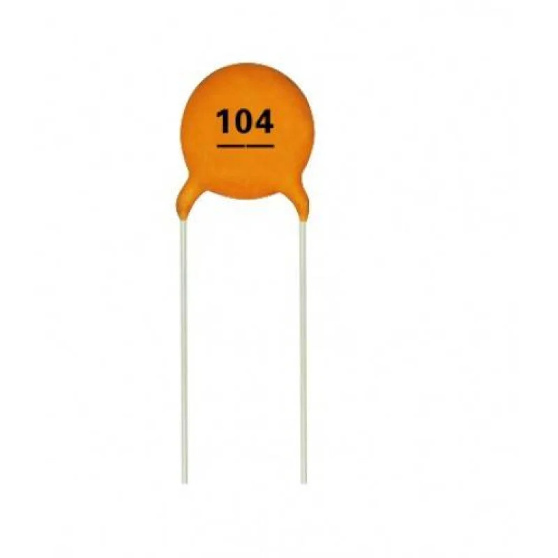O transistor TIP122 funciona como um amplificador de corrente, controlando componentes que precisam de mais energia.
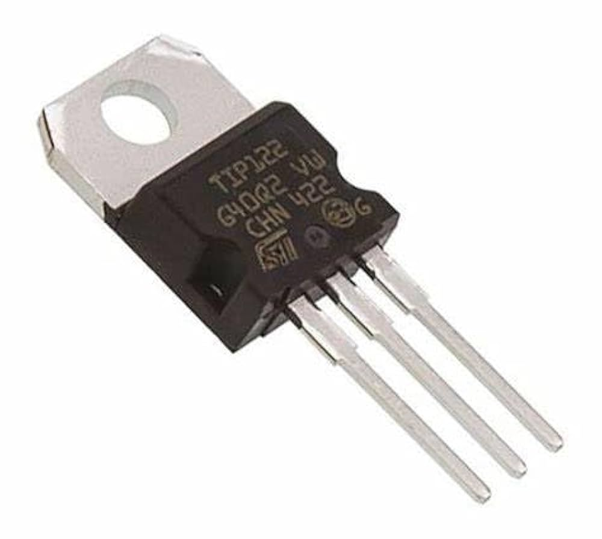A bateria 18650 fornece energia para todo o sistema.
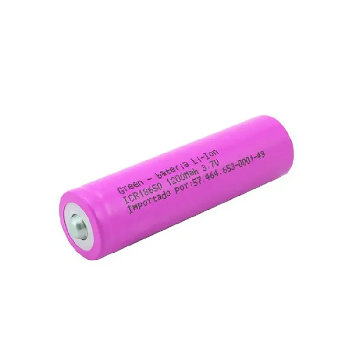O kit carro robotizado fornece a base com rodas, motores e estrutura para o robô se deslocar.
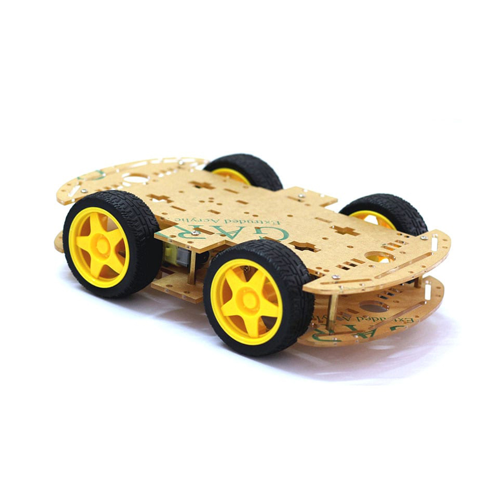A bomba de água é responsável por lançar a água e apagar o fogo.
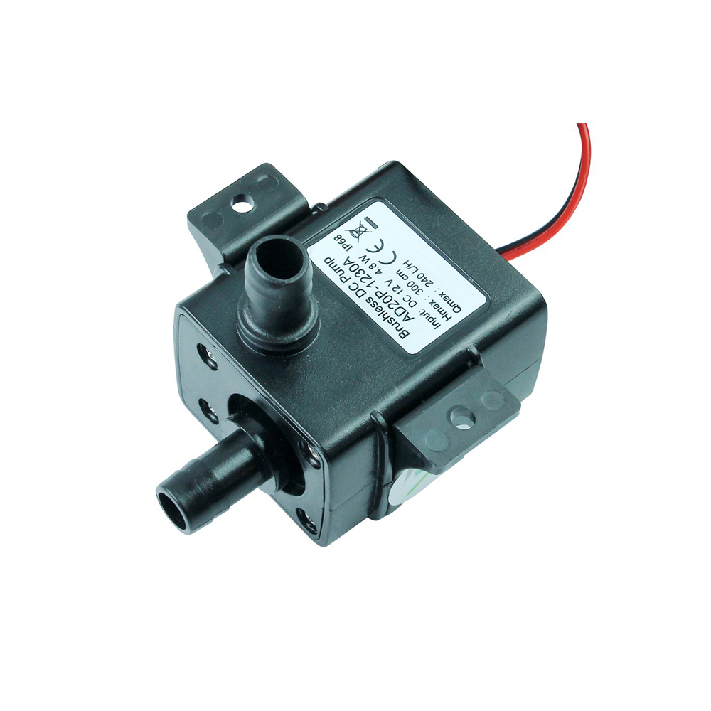O sensor de chamas detecta a presença de fogo e envia essa informação ao Arduino.
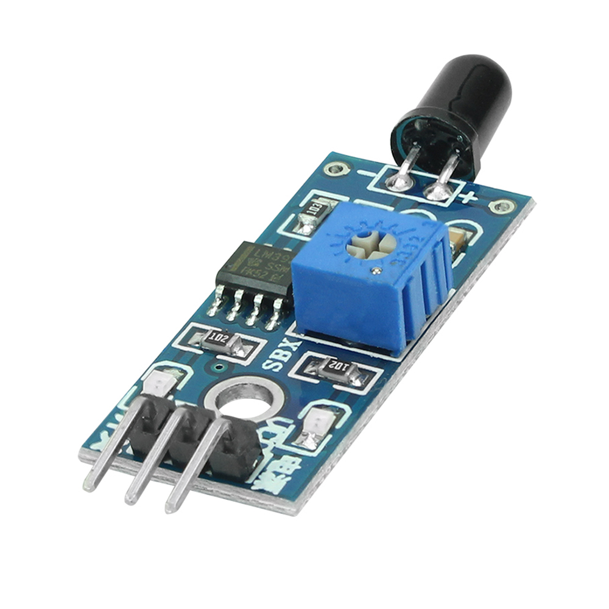O servo motor ajuda a direcionar o jato de água com precisão.
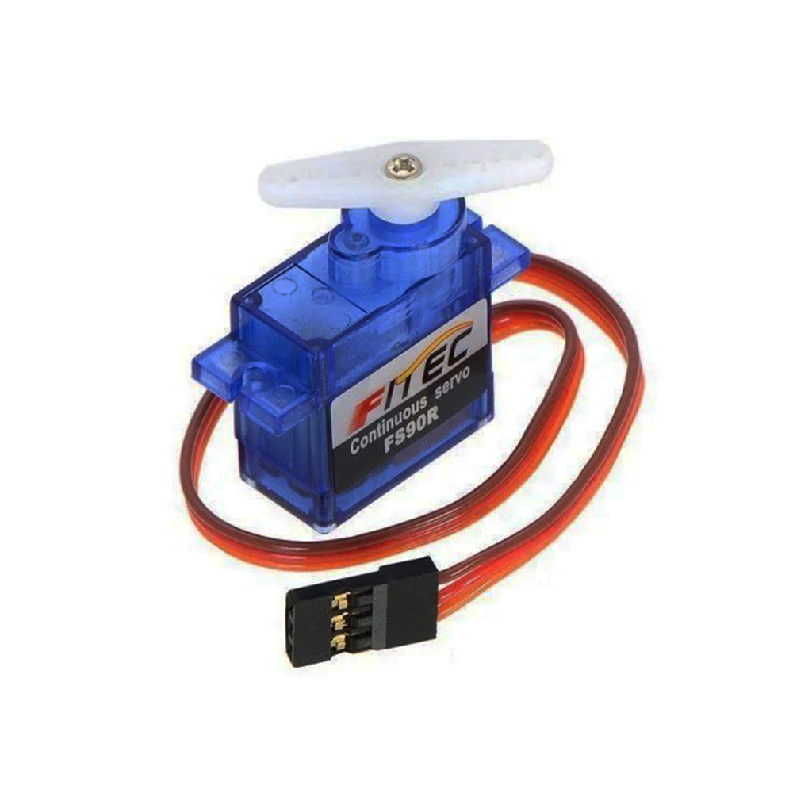Os fios fazem a ligação entre todas as partes do circuito.
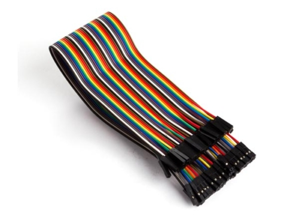O interruptor liga e desliga o robô.
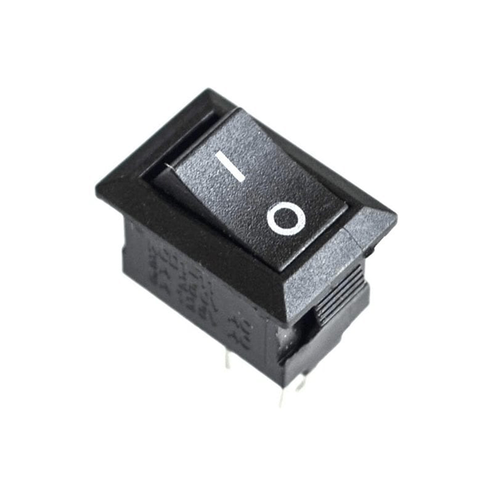O módulo L298 controla os motores das rodas, permitindo que o robô se mova em diferentes direções.
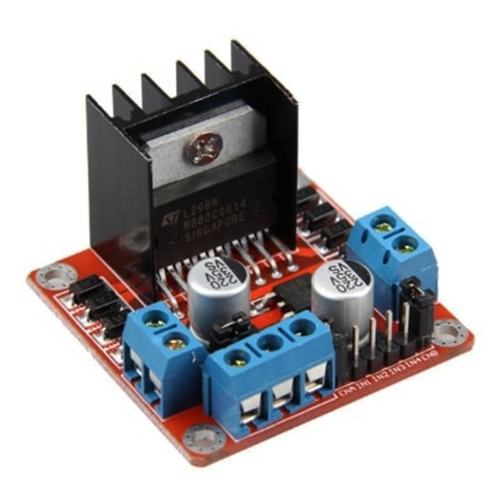O resistor de 1kΩ limita a passagem de corrente elétrica, protegendo os componentes.
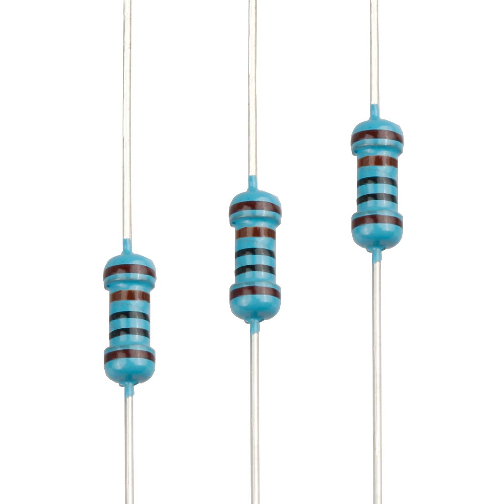O Arduino Uno é o cérebro do robô, controlando todos os componentes e processando os sinais dos sensores.
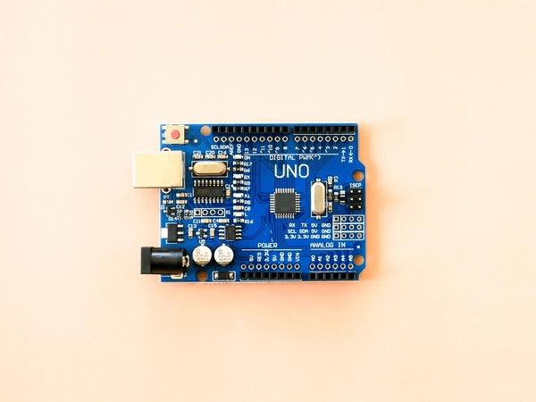Loja de eletrónica Tecmicro
Para aceder clique no link: Trabalho de Física 12ª CFB.
The end!